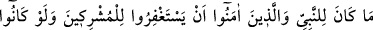
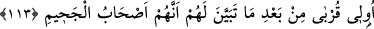
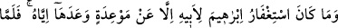
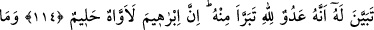
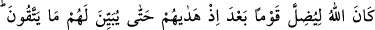
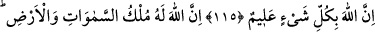
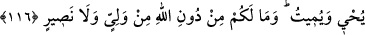

MÜŞRİKLER İÇİN
AF DİLEMEK
113. Akrabâ bile olsalar, cehennemlik oldukları belli olduktan sonra müşrikler için
mağfiret dilemek, peygamberin ve inananların yapacağı bir iş değildir.
114. İbrâhim’in babası için mağfiret dilemesi, sadece ona verdiği bir sözden ötürü
idi. Fakat kendisine onun bir Allah düşmanı olduğu belli olunca ondan uzak durdu.
Gerçekten İbrahim çok içli (ah çeken) ve halîm idi.
115. Allah, bir kavmi doğru yola ilettikten sonra, sakınmaları gereken şeyleri
kendilerine açıklamadıkça onları saptıracak değildir. Allah her şeyi bilendir.
116. Göklerin ve yerin mülkü Allah’ındır. O, diriltir ve öldürür. Sizin Allah’tan
başka ne bir dostunuz, ne de yardımcınız vardır.
O müşrikler “akrabâ bile” yâni müminlerin yakın akrabaları da “olsalar,” küfür
üzere ölmeleriyle veya onların bu hal üzere öleceklerini haber veren vahyin inmesiyle
“cehennemlik” cehennem ehlinden “oldukları” Peygamber (a.s.)’a ve müminlere
“belli olduktan sonra” belli olup ortaya çıktıktan sonra “müşrikler” Allah’a ortak
koşanlar “için mağfiret dilemek” affedilmelerini taleb etmek “peygamberin ve”
yalnızca Allah’a “inanların yapacağı iş değildir.” yâni Allah Teâlânın hüküm ve
hikmetine göre geçerli ve doğru değildir.
Rivâyet edildiğine göre hicretten üç sene önce, Hz. Peygamber (a.s.)’ın
bi‘setinden/gönderilmesinden on sene sonra Ebû Tâlib hastalandı. Hastalığının
şiddetlendiği haberi müşriklere ulaşınca birbirlerine: “Hamza ve Ömer müslüman oldu.
Muhammed’in dini bütün Kureyş kabileleri arasında yayıldı. Gelin Ebû Tâlib’e
gidelim. Kardeşinin oğluna bizim için engel olsun. Onun bizimle uğraşmasını engellesin.
Vallahi biz, müslümanların dinimizi elimizden zorla almalarından korkuyoruz.” dediler.